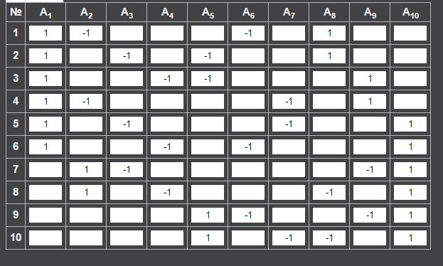
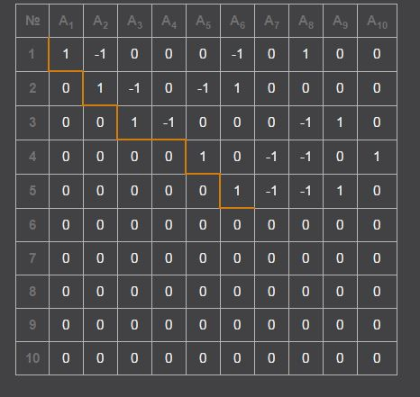

Intersection Theory
Chow rings¶


Example: Chow ring of \(\overline{\mathrm{M}}_{0,n}\)¶
The moduli space \(\overline{\mathrm{M}}_{0,n}\) of stable \(n\)-pointed rational curves admits an explicit Chow ring description via Keel's generators-and-relations theorem. For small \(n\), these rings can be computed completely and matched against classical geometric models.
The case \(n = 4\). Since \(\overline{\mathrm{M}}_{0,4} \cong \mathbb{P}^1\), the Chow ring is immediate. In Keel's framework, the three boundary divisors satisfy \(\delta_{12} = \delta_{13} = \delta_{14}\) (a single class \(\delta\)) and \(\delta_{12} \cdot \delta_{13} = 0\), recovering
The case \(n = 5\), linear relations. There are \(\binom{5}{2} = 10\) boundary divisor generators \(\delta_{ij}\) (before applying symmetry \(\delta_S = \delta_{S^c}\)). Keel's linear equivalences, arising from pulling back \([0] = [1] = [\infty]\) in \(\operatorname{CH}^1(\mathbb{P}^1)\) via the forgetful maps \(\overline{\mathrm{M}}_{0,5} \to \overline{\mathrm{M}}_{0,4}\), give for each quadruple \(\{i,j,k,l\}\):
Row-reducing the system of linear relations among the ten generators reveals five free generators. Taking \(\delta_{15}, \delta_{25}, \delta_{34}, \delta_{35}, \delta_{45}\) as a basis, the dependent generators are:
and \(\delta_{13}\), \(\delta_{12}\) follow by further substitution. Hence \(\operatorname{rank}(\operatorname{Pic}(\overline{\mathrm{M}}_{0,5})) = 5\).
Product relations. Keel's disjointness condition states \(\delta_S \cdot \delta_T = 0\) unless one of \(S \subset T\), \(S \subset T^c\), \(S^c \subset T\), \(S^c \subset T^c\) holds. For non-nested pairs, this forces \(\delta_{ab} \cdot \delta_{cd} = 0\) when \(\{a,b\}\) and \(\{c,d\}\) separate all five points. Multiplying the linear equivalence \(\delta_{ij} + \delta_{kl} = \delta_{ik} + \delta_{jl}\) by \(\delta_{ij}\) and applying disjointness yields
for any partition \(\{a,b\} \cup \{c,d\} = \{1,\ldots,5\} \setminus \{m\}\). All triple products vanish by dimension since \(\dim \overline{\mathrm{M}}_{0,5} = 2\).
Geometric identification as a del Pezzo surface. The space \(\overline{\mathrm{M}}_{0,5}\) admits a realization as a blow-up. The universal curve structure gives \(\overline{\mathrm{M}}_{0,5} \cong \operatorname{Bl}_{3\text{ pts on }\Delta}(\mathbb{P}^1 \times \mathbb{P}^1)\), where the blown-up points lie on the diagonal. Now \(\operatorname{Bl}_{2\text{ pts}}(\mathbb{P}^2) \cong \operatorname{Bl}_{1\text{ pt}}(\mathbb{P}^1 \times \mathbb{P}^1)\): the divisor \(2H - E_1 - E_2\) on \(\operatorname{Bl}_{2\text{ pts}}(\mathbb{P}^2)\) maps to conics through the two points, embedding the surface as a smooth quadric in \(\mathbb{P}^3\), which is \(\mathbb{P}^1 \times \mathbb{P}^1\). The embedding contracts the strict transform \(H - E_1 - E_2\), and reversing this contraction (blowing up the image point) recovers \(\operatorname{Bl}_{2\text{ pts}}(\mathbb{P}^2)\). Iterating gives \(\overline{\mathrm{M}}_{0,5} \cong \operatorname{Bl}_{4\text{ general pts}}(\mathbb{P}^2)\), a del Pezzo surface of degree 5.
The blow-up formula immediately yields the Chow ring:
The dictionary between Keel's boundary divisors \(\delta_{ij}\) and the blow-up generators \(H, E_1, \ldots, E_4\) can be determined by matching intersection numbers.
Remark: Keel, Chow ring of \(\overline{\mathrm{M}}_{0,n}\)¶
Sean Keel's theorem (Intersection theory of moduli space of stable \(n\)-pointed curves of genus \(0\)) provides a complete presentation of \(\operatorname{CH}^*(\overline{\mathrm{M}}_{0,n})\). The generators are boundary divisors \(\delta_S\) indexed by subsets \(S \subset \{1, \ldots, n\}\) with \(\#S \geq 2\) and \(\#S^c \geq 2\), subject to three families of relations:
-
Symmetry. \(\delta_S = \delta_{S^c}\), reflecting that a partition into \(S\) and \(S^c\) defines the same boundary stratum regardless of labeling.
-
Linear equivalences. For any four distinct elements \(i,j,k,l \in \{1,\ldots,n\}\),
These arise from pulling back \([0] = [1] = [\infty]\) in \(\operatorname{CH}^1(\mathbb{P}^1)\) via the forgetful morphisms \(\overline{\mathrm{M}}_{0,n} \to \overline{\mathrm{M}}_{0,4} \cong \mathbb{P}^1\) that remember only the four marked points \(i,j,k,l\).
- Disjointness. \(\delta_S \cdot \delta_T = 0\) unless one of the four containments \(S \subset T\), \(S \subset T^c\), \(S^c \subset T\), \(S^c \subset T^c\) holds. This reflects the geometric fact that two boundary divisors parametrizing non-nested partitions have empty intersection in \(\overline{\mathrm{M}}_{0,n}\).
These relations are complete: they generate the full ideal of relations. The number of distinct generators (after identifying \(\delta_S = \delta_{S^c}\)) is \(\frac{1}{2}(2^n - 2) - n\), since we exclude \(\#S < 2\) and \(\#S^c < 2\), and identify complementary subsets. For \(n = 6\), this gives \(\frac{1}{2}(62) - 6 = 25\) generators.
Remark: Blow-ups of \(\mathbb{P}^2\)¶
The relationship between blow-ups of \(\mathbb{P}^2\) and \(\mathbb{P}^1 \times \mathbb{P}^1\) involves several identities and non-identities that require careful attention to the positions of the blown-up points.
\(\operatorname{Bl}_{2\text{ pts}}(\mathbb{P}^2) \cong \operatorname{Bl}_{1\text{ pt}}(\mathbb{P}^1 \times \mathbb{P}^1)\). Both surfaces are del Pezzo surfaces of degree 7. The first is also the Hirzebruch surface \(\mathbb{F}_1 = \mathbb{P}(\mathcal{O} \oplus \mathcal{O}(1))\) blown up once. Note \(\mathbb{F}_1 \cong \operatorname{Bl}_{1\text{ pt}}(\mathbb{P}^2) \not\cong \mathbb{P}^1 \times \mathbb{P}^1\): the surface \(\mathbb{F}_1\) contains a \((-1)\)-curve (the exceptional section), while \(\mathbb{P}^1 \times \mathbb{P}^1\) has no curves of negative self-intersection. This also shows \(\mathbb{F}_1\) is not minimal, whereas all other Hirzebruch surfaces \(\mathbb{F}_n\) (\(n \neq 1\)) are.
\(\operatorname{Bl}_{3\text{ pts on }\Delta}(\mathbb{P}^1 \times \mathbb{P}^1) \cong \operatorname{Bl}_{4\text{ general pts}}(\mathbb{P}^2)\). This follows from iterating the identity \(\operatorname{Bl}_{2\text{ pts}}(\mathbb{P}^2) \cong \operatorname{Bl}_{1\text{ pt}}(\mathbb{P}^1 \times \mathbb{P}^1)\). In \(\mathbb{P}^1 \times \mathbb{P}^1\), any three distinct points in general position (no two sharing a fibre of either projection) can be moved to the diagonal by an automorphism.
\(\operatorname{Bl}_{4\text{ general pts}}(\mathbb{P}^2) \not\cong \operatorname{Bl}_{4\text{ pts, 3 collinear}}(\mathbb{P}^2)\). If three of the four blown-up points \(p_1, p_2, p_3\) lie on a line \(L \subset \mathbb{P}^2\), the strict transform \(\widetilde{L}\) has class \(H - E_1 - E_2 - E_3\), so
This produces a \((-2)\)-curve, which cannot exist when the four points are in general position. In that case, the \((-1)\)-curves are exactly the ten classes \(E_i\), \(H - E_i - E_j\) (\(i < j\)), and \(2H - E_1 - E_2 - E_3 - E_4\) (the conic through all four), each with self-intersection \(-1\). A \((-2)\)-curve would create an ADE singularity upon contraction, changing the deformation type of the surface.
Five conics problem via fundamental class¶
Example: 3264 conics via excess intersection¶
The classical enumerative problem asks: how many smooth conics are tangent to five general conics in \(\mathbb{P}^2\)? The answer is 3264. We derive this by computing the virtual fundamental class of the tangency locus and separating its contribution from the embedded component supported on double lines.
Setup. The space of conics in \(\mathbb{P}^2\) is \(\mathbb{P}^5 = \mathbb{P}(H^0(\mathcal{O}_{\mathbb{P}^2}(2)))\). The locus \(Z_i \subset \mathbb{P}^5\) of conics tangent to a fixed smooth conic \(C_i\) is a hypersurface of degree 6 (the discriminant of the pencil spanned by the conic and its dual). Each \(Z_i\) is the zero locus of a section \(f_i \in H^0(\mathcal{O}_{\mathbb{P}^5}(6))\). The intersection \(\mathcal{M} = \bigcap_{i=1}^{5} Z_i\) parametrizes conics simultaneously tangent to all five.
If \(\mathcal{M}\) were a proper complete intersection, Bezout's theorem would give \(\deg \mathcal{M} = 6^5 = 7776\). However, \(\mathcal{M}\) is not a complete intersection: the degree-2 Veronese surface \(S \subset \mathbb{P}^5\), parametrizing double lines \(\ell^2\), is contained in every \(Z_i\) with multiplicity 2 (a double line is "tangent" to any conic in a degenerate sense). We must account for this embedded component using excess intersection theory.
Virtual fundamental class. We view the five sections \(f_1, \ldots, f_5\) as defining a section of the rank-5 bundle \(E = \mathcal{O}_{\mathbb{P}^5}(6)^{\oplus 5}\). The deformation-to-the-normal-cone construction scales \(f_i \mapsto tf_i\) and takes \(t \to \infty\), producing the normal cone \(C_{\mathcal{M}/\mathbb{P}^5}\) inside \(E|_{\mathcal{M}}\). The virtual fundamental class is defined via the Gysin map:
Segre class of the Veronese component. Let \(h = c_1(\mathcal{O}_S(1))\) denote the hyperplane class on \(S \cong \mathbb{P}^2\), so \(H|_S = 2h\) (the Veronese embedding has degree 2). The multiplicity of each \(Z_i\) along \(S\) is 2 (see Eisenbud--Harris, 3264 and All That, p. 463), so the Segre class of \(\mathcal{M}\) along the Veronese component picks up a factor of \(2^{k+3}\) in degree \(k\):
We compute the normal bundle Segre class via the tangent bundle sequence. The Veronese embedding \(\nu: \mathbb{P}^2 \hookrightarrow \mathbb{P}^5\) gives \(c(T_{\mathbb{P}^5})|_S = (1+H)^6|_S = (1+2h)^6\) and \(c(T_S) = (1+h)^3\), so
Inverting: \(s(S, N_{S/\mathbb{P}^5}) = 1 - 9h + 51h^2\). With the multiplicity factors:
Chern class of \(E\). On \(\mathcal{M}\), the bundle \(E = \mathcal{O}(6)^{\oplus 5}\) has \(c(E|_S) = (1+6H|_S)^5 = (1+12h)^5\).
Degree of the Veronese contribution. We extract the degree-0 piece (i.e., the degree in \(A_0(S) \cong \mathbb{Z}\)):
Expanding \((1+12h)^5 = 1 + 60h + 1440h^2 + \cdots\) (only terms up to \(h^2\) matter on \(\mathbb{P}^2\)), and collecting the \(h^2\)-coefficient:
| Term | \(h^2\)-coefficient |
|---|---|
| \(8 \cdot 1440\) | \(11520\) |
| \(-144 \cdot 60\) | \(-8640\) |
| \(1632 \cdot 1\) | \(1632\) |
Total: \(11520 - 8640 + 1632 = 4512\). Since \(\int_S h^2 = \deg S = 1\) (a single point on \(\mathbb{P}^2\)), the Veronese component contributes \(4512\) to the virtual degree.
Extracting the answer. The total virtual degree equals the top Chern class:
The zero-dimensional component of \(\mathcal{M}\) (the smooth conics tangent to all five) contributes the remainder:
From the perspective of virtual fundamental classes, the essential content is not just the answer \(3264\) but the decomposition \([\mathcal{M}]^{\mathrm{vir}} = 4512[\text{pt on }T] + 3264[\text{reduced points}]\), which exhibits how the virtual class distributes between the embedded and isolated components.
Quantum cohomology of projective spaces¶
Example: Quantum cohomology ring of \(\mathbb{P}^n\)¶
The (small) quantum cohomology ring of \(\mathbb{P}^n\) is
where \(h_1 \in H^2(\mathbb{P}^n)\) is the hyperplane class and \(q\) is the Novikov variable tracking degree. The proof combines classical intersection theory with a single Schubert calculus computation on \(\operatorname{Gr}(2, n+1)\).
Notation. We write \(H^k\) for the class of a linear subspace \(\mathbb{P}^{n-k} \subset \mathbb{P}^n\) in homology \(H_{2(n-k)}(\mathbb{P}^n)\), and \(h_k\) for the corresponding cohomology class in \(H^{2k}(\mathbb{P}^n)\), so \(h_k = h_1^k\). The second homology \(H_2(\mathbb{P}^n, \mathbb{Z}) = \mathbb{Z} \cdot H^{n-1}\) is generated by the class of a line. The Novikov variable satisfies \(q^{rH^{n-1}} = q^r\).
Dimension count. The moduli space \(\mathcal{M}_{0,3}(\mathbb{P}^n, r H^{n-1})\) of degree-\(r\) genus-0 stable maps with 3 marked points has dimension
The quantum product is
where \(\langle H^i | H^j | H^k \rangle_{rH^{n-1}}\) is the genus-0, 3-point, degree-\(r\) Gromov--Witten invariant. The three evaluation maps \(\operatorname{ev}_1^*(H^i) \cup \operatorname{ev}_2^*(H^j) \cup \operatorname{ev}_3^*(H^k)\) impose \(i + j + k\) conditions on a space of dimension \(n + r(n+1)\). For the invariant to be nonzero, we need \(i + j + k = n + r(n+1)\), which forces \(r = 0\) or \(r = 1\) (since \(i, j, k \leq n\), we have \(i+j+k \leq 3n\), so \(r(n+1) \leq 2n\), giving \(r \leq 1\) for \(n \geq 1\)).
The \(r = 0\) contribution. These are the classical intersection numbers:
This recovers the ordinary cup product \(h_i \cup h_j = h_{i+j}\) when \(i + j \leq n\).
The \(r = 1\) contribution via Schubert calculus. The invariant \(\langle H^i | H^j | H^k \rangle_{H^{n-1}}\) counts lines in \(\mathbb{P}^n\) meeting three general linear subspaces \(\mathbb{P}^{n-i}\), \(\mathbb{P}^{n-j}\), \(\mathbb{P}^{n-k}\). A line in \(\mathbb{P}^n\) corresponds to a 2-plane in \(\mathbb{C}^{n+1}\), and the condition that this 2-plane meets a linear subspace of dimension \(n+1-i\) nontrivially is the Schubert condition \(\sigma_{i-1}\) in \(\operatorname{Gr}(2, n+1)\). So
Since \(\sigma_{i-1}\), \(\sigma_{j-1}\), \(\sigma_{k-1}\) are all special Schubert classes (single-row partitions), we can apply Pieri's rule iteratively. The dimension of \(\operatorname{Gr}(2, n+1)\) is \(2(n-1)\), so the product is nonzero only when \((i-1) + (j-1) + (k-1) = 2(n-1)\), i.e., \(i + j + k = 2n + 1\). In that case, Pieri's rule gives exactly one way to fill the \(2 \times (n-1)\) Young diagram, so
Assembling the ring. For \(i + j \leq n\), the quantum product agrees with the classical product: \(h_i \circ h_j = h_{i+j}\). The only new relation appears when \(i + j = n + 1\) (the first case where the classical product vanishes). Setting \(i = 1\), \(j = n\):
since \(1 + n + k = 2n+1\) forces \(k = 0\). Since \(h_n = h_1^n\) classically, we obtain \(h_1^{n+1} = q\) in the quantum ring, giving the presentation \(QH^*(\mathbb{P}^n) = \mathbb{Z}[h_1, q]/(h_1^{n+1} - q)\).
Quantum cohomology of the flag variety¶
Example: Quantum cohomology of \(F_{1,2}(\mathbb{C}^3)\)¶
The complete flag variety \(F_3 = F_{1,2}(\mathbb{C}^3) = \{(L, V) \in \operatorname{Gr}(1, \mathbb{C}^3) \times \operatorname{Gr}(2, \mathbb{C}^3) \mid L \subset V\}\) is diffeomorphic to \(U_3/(U_1 \times U_1 \times U_1)\). We compute its quantum cohomology ring
Classical Chow ring. The flag variety \(F_3 = \mathbb{P}(\mathcal{V})\), the projectivization of the tautological rank-2 bundle \(\mathcal{V}\) on \(\operatorname{Gr}(2, \mathbb{C}^3) = \mathbb{P}^2\). Let \(\alpha = c_1(\mathcal{O}_{\mathbb{P}^2}(1))\) be the hyperplane class on the base and \(\zeta = c_1(\mathcal{O}_{\mathbb{P}(\mathcal{V})}(1))\) the tautological class of the projectivization. The Chern classes of the tautological bundle are \(c(\mathcal{V}) = 1 - \sigma_1 + \sigma_{1,1} = 1 - \alpha + \alpha^2\) (identifying \(\sigma_1 = \alpha\) and \(\sigma_{1,1} = \alpha^2\) on \(\mathbb{P}^2 = \operatorname{Gr}(2,3)\)). By the projective bundle formula:
The variety \(\mathbb{P}(\mathcal{V})\) has dimension 3, and the Schubert cell decomposition gives the following intersection pairing. Writing \(F\) and \(L\) for the fibre class and a line class in \(H_2\):
| Cycle | Homology | Cohomology | Degree |
|---|---|---|---|
| \([\text{pt}]\) | \(H_0\) | \(\alpha^2\zeta\) | 6 |
| fibre, \(\mathbb{P}^1\) | \(H_2\); \(F\), \(L\) | \(\zeta\), \(\alpha\) | 2 |
| \(\pi^{-1}(\text{pt})\), section | \(H_4\); \(f\), \(l\) | \(\alpha^2\), \(\zeta^2\) | 4 |
| \([\mathbb{P}(\mathcal{V})]\) | \(H_6\) | \(1\) | 0 |
The pairings are \(\alpha^2 \zeta = \alpha \zeta^2 = [\text{pt}]\), and \(\alpha^3 = 0\) (by the relation).
Quantum parameters. The second homology is \(H_2(\mathbb{P}(\mathcal{V})) = \mathbb{Z} F \oplus \mathbb{Z} L\), with Novikov variables \(q_1^r q_2^s\) for the class \(rF + sL\). The first Chern class of the tangent bundle satisfies \(c_1(T_{\mathbb{P}(\mathcal{V})}) = 2\zeta + 2\alpha\) (from the relative tangent sequence and the base), giving
Computing \(\alpha \circ \alpha\). We expand
where \(l = \alpha\) is the Poincare dual of the line class. The classical terms (\(r = s = 0\)) are \(\langle l, l, l \rangle_0 = \alpha^3 = 0\) and \(\langle l, l, f \rangle_0 = \alpha^2 \zeta = 1\), with \(f^{\vee} = \alpha^2\). For degree \((1,0)\): \(\langle l | l | [\text{pt}] \rangle_{(1,0)}\) counts degree-1 curves in the fibre class meeting two copies of \(l\). There is exactly one fibre through any point of the base, giving \(\langle l | l | [\text{pt}] \rangle_{(1,0)} = 1\). For degree \((0,1)\): \(\langle l | l | [\text{pt}] \rangle_{(0,1)}\) counts lines in the base \(\mathbb{P}^2\) meeting two "line conditions," but the moduli space of such maps has positive fibre dimension, giving Gromov--Witten invariant 0. Therefore:
Computing \(\zeta \circ \zeta\). A parallel argument yields \(\zeta \circ \zeta = \zeta^2 + q_2\).
The quantum ring. The classical relations \(\zeta^2 - \alpha\zeta + \alpha^2 = 0\) and \(\alpha^3 = 0\) are deformed to
The second quantum relation follows from the first: multiplying \(\zeta^2 - \alpha\zeta + \alpha^2 - q_1 - q_2 = 0\) by \(\alpha\) and using \(\alpha \circ (\zeta^2 - \alpha\zeta + \alpha^2 - q_1 - q_2) = 0\) gives the stated relation, since
is the additional relation that closes the ideal.
Comparison. In Guest's notation (From cohomology to integrable systems, Example 2.6), with generators \(a = \alpha\), \(b = \zeta\):
which is manifestly the same ring.
Equivariant cohomology¶
By the approximation theorem, equivariant cohomology \(H_G^*(X) := H^*(EG \times_G X)\) can be computed from finite-dimensional approximations: if \(\mathbb{E}_m\) is a connected space with free \(G\)-action and \(H^i(\mathbb{E}_m) = 0\) for \(0 < i < k(m)\), then \(H_G^*(X) = H^*(\mathbb{E}_m \times_G X)\) for \(* < k(m)\).
Example: \(G = (\mathbb{C}^\times)^n\), \(X = \operatorname{pt}\)¶
For the algebraic torus \(G = (\mathbb{C}^\times)^n\) acting on a point, the equivariant cohomology ring is a polynomial ring:
The approximation spaces \(\mathbb{E}_m = (\mathbb{C}^m \setminus \{0\})^n\) carry a free diagonal torus action, and the quotient is \(\operatorname{pt} \times_G \mathbb{E}_m = (\mathbb{P}^{m-1})^n\). These fit into a tower of closed embeddings
By the Kunneth formula, \(H^*((\mathbb{P}^{m-1})^n) = \mathbb{Z}[t_1, \ldots, t_n]/(t_1^m, \ldots, t_n^m)\), where \(t_i = c_1(\mathcal{O}(1))\) on the \(i\)-th factor. Passing to the inverse limit in cohomology removes the truncations, yielding \(H^*((\mathbb{P}^\infty)^n) = \mathbb{Z}[t_1, \ldots, t_n]\).
Example: \(G = (\mathbb{C}^\times)^n\), \(X = \operatorname{Gr}(k,n)\)¶
The \((\mathbb{C}^\times)^n\)-equivariant cohomology of the Grassmannian is
where \(c_j\) and \(c_j'\) are the equivariant Chern classes of the tautological and quotient bundles.
The Borel construction. Let \(E = \mathbb{C}^n\) with the standard torus action (the \(i\)-th factor scales the \(i\)-th coordinate). The mixed quotient \(V_m := E \times_G (\mathbb{C}^m \setminus \{0\})^n = \bigoplus_{i=1}^n \mathcal{O}_i(-1)\) is a rank-\(n\) vector bundle over \((\mathbb{P}^{m-1})^n\), where \(\mathcal{O}_i(-1)\) is the tautological line bundle on the \(i\)-th projective space factor. The Borel quotient for the Grassmannian is then
the Grassmannian bundle of \(k\)-planes in the fibres of \(V_m\).
Taking the limit. The cohomology of a Grassmannian bundle \(\operatorname{Gr}(V_m, k)\) over a base \(B\) is generated over \(H^*(B)\) by the Chern classes of the tautological and quotient bundles, subject to the Whitney sum relation \(c(\mathcal{S}) \cdot c(\mathcal{Q}) = c(V_m)\). As \(m \to \infty\), the base cohomology \(H^*((\mathbb{P}^{m-1})^n) \to \mathbb{Z}[t_1, \ldots, t_n]\) and the total Chern class of \(V_m\) becomes \(c(V) = \prod_{i=1}^n (1+t_i)\), yielding the stated presentation.
The projective space case. For \(k = 1\), the tautological bundle on \(\operatorname{Gr}(1,n) = \mathbb{P}^{n-1}\) is a line bundle with \(c_1 = -\zeta\) (where \(\zeta = c_1(\mathcal{O}(1))\)). Eliminating the quotient bundle Chern classes from the Whitney sum relation reduces to a single equation:
The fixed points of the torus action on \(\mathbb{P}^{n-1}\) are the coordinate points \(e_i\), and the relation \(\prod(\zeta + t_i) = 0\) factors over these fixed points: at the fixed point \(e_j\), the equivariant hyperplane class evaluates to \(\zeta = -t_j\).
Remark: \(\mathcal{O}(-1)\) or \(\mathcal{O}(1)\)?¶
In the Borel construction for a torus action, the mixed quotient \(E \times_G (\mathbb{C}^m \setminus \{0\})^n\) yields \(\mathcal{O}(-1)\) (not \(\mathcal{O}(1)\)) when the fibre and base carry the same weight. The reason is direct: the tautological line bundle on \(\mathbb{P}^{m-1}\) is the sub-line-bundle of \(\mathbb{C}^m\) whose fibre over \([\ell]\) is the line \(\ell\) itself. This is precisely the bundle produced by the Borel construction when the representation \(E = \mathbb{C}\) has the same weight as the standard scaling action on \(\mathbb{C}^m \setminus \{0\}\). Since the tautological bundle has no nonzero global sections (a section would be a linear form vanishing on every line through the origin, which is impossible), it must be \(\mathcal{O}(-1)\).
Remark¶
For a comprehensive treatment of equivariant cohomology in algebraic geometry, including the localization theorem and applications to enumerative geometry, see D. Anderson's Introduction to Equivariant Cohomology in Algebraic Geometry (IMPAN lecture notes). These notes develop the Borel construction, approximation theorem, equivariant Chern classes, and the Atiyah--Bott localization formula, with detailed examples on flag varieties and Grassmannians.